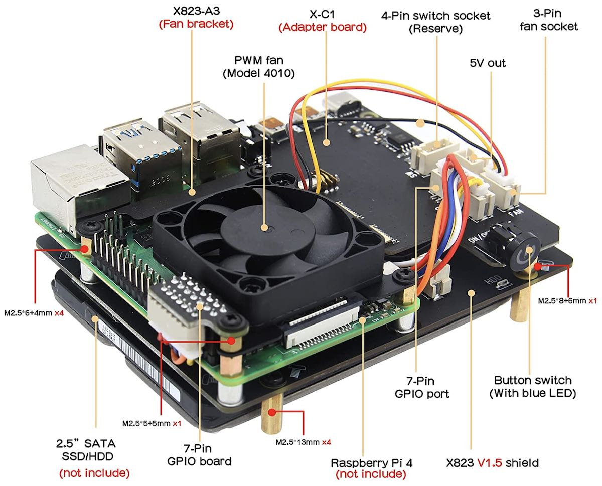

自己动手使用树莓派搭建家用NAS和流媒体服务器
网络附接存储（NAS）通过计算机网络提供对异构网络用户的文件级数据访问。随着硬盘价格的持续下降，NAS设备已经走入大众家庭。领先中小企业及家用NAS市场的品牌产商如群晖科技（Synology），其产品价格从低端$300到高端$700不等。但如果你是树莓派玩家，只需要最低价一半左右的成本，就可以搭建很不错的家用NAS及流媒体播放服务。
这篇博文记录了构建Raspberry Pi NAS和家庭媒体服务器的整个过程，包括项目规划、系统实现和性能评估。这里还总结了一些重要的经验和相关选购信息，希望对任何想要尝试这个DIY项目的人有所帮助。
项目规划
树莓派（Raspberry Pi）4B的处理器升级为1.8GHz的博通BCM2711（四核Cortex-A72），其板载内存容量最高达8GB，配备了两个更新的USB 3.0接口和全速千兆以太网，电源也采用了较新的USB-C接口。这些极大地提高了系统吞吐量和整体综合性能，我们可以用它打造全功能家用NAS。

在NAS系统软件方面，OpenMediaVault（OMV）是基于Debian Linux的完整NAS解决方案。它是知名的开源NAS服务器系统FreeNAS（基于FreeBSD）的Linux重写版。OMV的显著特点有
- 开箱即用，安装和管理无需网络和存储系统专业知识
- 适用于x86-64和ARM平台，具有完整的Web管理界面
- 支持多种协议（如SFTP、SMB/CIFS或NFS）下的文件存储访问
- 可以通过SSH进行管理，能控制用户和组的访问权
OMV主要用于家庭环境或小型家庭办公室，但不限于这些场景。该系统基于模块化设计，安装基本系统后即可使用插件轻松扩展。很显然，OMV就是我们需要的NAS服务器系统软件。
NAS系统配上媒体播放系统，可以在家庭网络环境下提供极佳的音/视频点播体验。Plex媒体服务器软件整合互联网媒体服务（YouTube、Vimeo和TED等）和本地多媒体资料库，为用户的各种设备提供流媒体播放服务。Plex管理本地资料库的特色是
- 集中管理，单一库轻松共享
- Web界面媒体资料导航，流播放
- 实时保存和恢复播放进程
- 多用户支持及分级播放权限设置
Plex媒体服务器软件本身是免费的，也支持众多操作系统，非常适合与家用NAS相集成。
以上这些涵盖了我们的NAS项目所需的所有软件，但是这对一个完整的NAS系统是不够的。我们还需要一个优选的机壳，否则树莓派NAS只能裸机运行。虽然市场上树莓派4B可用的机壳很多，作为NAS系统我们需要能容纳至少1-2个内置式SSD/HDD的机壳套件，此外还必须拥有良好的散热设计。
经过一些比对，确定选用Geekworm的NASPi 树莓派4B NAS存储套件。NASPi是专为最新的树莓派4B设计的的NUC（Next Unit of Computing）风格的NAS存储解决方案。它由三个部件组成：
- X823存储屏蔽板，支持2.5英寸SATA 固态硬盘（SDD）或机械硬盘（HDD）
- X-C1适配板，将所有树莓派4B接口调整到机壳背面，并提供安全关机按钮
- 基于温控PWM（Pulse-Width Modulation，脉冲宽度调制）风扇的散热系统
所有这些部件最后组装到铝合金制成并经过表面阳极氧化处理的外壳内。
就此我们的NAS项目规划如下：
- 硬件系统：
- 树莓派4B 8GB RAM主硬件系统
- 32GB microSD用于树莓派OS存储
- NASPi NAS存储套件
- 15-20W USB-C 电源适配器
- 500GB内置式SSD（USB 3.0）
- 2TB外置式HDD（USB 3.0）
- 软件系统：
- 轻量级树莓派OS（无桌面环境）
- OMV用于NAS文件服务器
- Plex媒体服务器提供流媒体服务
要特别指出的是，NAS服务器一般都是无头系统（headless system），无需键盘、鼠标和显示器。这对软硬件系统的安装、配置和调试都提出一些挑战。实际实现中，如下一节的描述所示，我们应用SSH终端连接完成基本项目实现过程。
系统实现
此项目实现分为四个阶段，逐段详细描述如下。
预备树莓派4B
第一阶段我们需要预先准备树莓派操作系统，并做一些基本的单元测试。这个很重要，如果等到完整的NSAPi套件组装完毕再测试，那时发现树莓派的问题就很麻烦。
预备操作系统
首先将microSD卡插入到USB适配器并连接到macOS电脑，然后到树莓派网站下载Raspberry Pi Imager软件运行。从应用程序的界面，逐级点击CHOOSE OS > Raspberry Pi OS (other) > Raspberry Pi OS Lite (32-bit)，选择不需要桌面环境的轻量级树莓派操作系统，再点击CHOOSE STORAGE选择microSD卡。
接下来是一个小窍门——敲入ctrl-shift-x组合键，就会弹出如下的高级选项对话框  这里正好就有我们需要的启动时启用SSH选项Enable SSH，还能为默认的用户名
这里正好就有我们需要的启动时启用SSH选项Enable SSH，还能为默认的用户名pi预设密码（默认为raspberry）。设置完毕点击SAVE回到主页面，再点击WRITE就开始格式化microSD卡和写入系统。完成之后将microSD卡取出再插入到树莓派中，连接以太网加电启动。
探测IP地址
这时我们碰到一个问题：由于安装的系统没有桌面环境，没法连上键盘、鼠标和显示器，那么我们如何找到其IP地址呢？有两个办法：
- 连接到家用路由器的管理网页，查看主机名raspberry对应的地址。
- 应用nmap工具扫描对应网段，对比树莓派启动前后的变化。
nmap工具的运行记录如下。注意到扫描出新的IP地址192.168.2.4，再对其单独运行nmap发现TCP端口22已打开。据此可以大致判定这就是我们新上线的树莓派：
1 | ❯ nmap -sn 192.168.2.0/24 |
系统更新升级
下一步尝试SSH连接
1 | ❯ ssh pi@192.168.2.4 |
确认后，就可以在树莓派里执行以下命令更新和升级系统：
1 | pi@raspberrypi:~ $ sudo apt update && sudo apt upgrade |
网络连接测试
本阶段的最后，是测试树莓派4B系统以太网连接的稳定性。在macOS电脑上用简单的ping命令，设定-i 0.05选项指定每秒20个数据包，以及-t 3600选项运行1个小时的测试
1 | ❯ sudo ping -i 0.05 192.168.2.4 -t 3600 |
在没有无线连接的网段上，应该不会有超过1%数据包丢失或超时，否则应该检查排错。事实上，在实测中真的出现了将近10%的ping数据包的情况，SSH连接也时常掉线。上网搜索发现，类似的树莓派4B以太网连接丢包问题已有不少报告。相关论坛上人们给出的分析和建议集中在以下几点：
- 供电不稳定造成丢包，需要更换为15W以上可靠的USB-C电源适配器。
- 高能效以太网（Energy-Efficient Ethernet）机能失常，关闭即可解决。
- 全速千兆以太网连接功能故障，必须降速到100Mbit/s使用。
实际中试验了上面所有这些，收效不大。后来发现，连接树莓派4B的家用路由器，是2011年产的Belkin N750 DB。虽然它提供 Wi-Fi双频段802.11n和4个千兆以太网端口，可是生产年限过于久远，不由得让人怀疑其互操作性问题。而以上报告的第2、3点本质上也属于互操作性问题。想到这些，马上订购了普联（TP-Link）TL-SG105 5端口千兆以太网交换机。收到后，用TL-SG105扩展N750的千兆以太网端口，树莓派4B连接到TL-SG105上，再重新测试。果然这一次ping丢包率不到0.1%，SSH连接也很稳固。
结论是，树莓派4B千兆以太网接口与一些旧式设备可能存在兼容性问题，可通过在二者之间插入互操作良好的交换机解决。
NSAPi套件组装
第二阶段组装NSAPi存储套件，目标是装配全部硬件，完成独立的NAS机体。
预备内置SSD
NSAPi支持一个内置SSD或HDD。项目选择的是三星870 EVO 500GB 内置SSD，这里必须先确保SSD能单独正常工作，否则就得要拆机才能更换。可以将SSD挂接到Windows系统检查一下文件系统和基本读写操作。如果是新买的SSD，在Windows系统上可执行下列的步骤快速格式化：
- 点击Start或Windows按钮，选择Control Panel > System and Security
- 选择Administrative Tools > Computer Management > Disk management
- 选中要格式化的硬盘, 点击右键选择Format
- 在出现的对话框中选择
- File System → NTFS
- Allocation Unit Size → Default
- Volume Label →（指定卷名）
- Perform a quick format
- File System → NTFS
- 点击OK开始快速格式化SSD
⚠️注意：这里选择的文件系统是NTFS，这是OMV支持挂载（mount）文件系统之一。
PWM风扇控制
在实际的硬件组装之前，还要安装Geekworm提供的一个特殊软件——PWM风扇控制脚本。基于温度变化的PWM风扇转速控制是NASPi区别于其他硬件方案的一大特色，所以这一步很重要。
参考Geekworm的X-C1软件维基页，SSH连接到树莓派4B系统后的安装命令序列如下
1 | sudo apt-get install -y git pigpio |
如果在树莓派4B上不能直接做git clone，可以先在SSH客户端下载X-C1软件，然后用scp传送到树莓派4B，再执行后续命令
1 | ❯ scp -r x-c1 pi@192.168.2.4:/home/pi/ |
X-C1软件是如何控制PWM风扇的？
X-C1软件的核心是一个名为fan.py的Python程序，代码如下
1 | #!/usr/bin/python |
它的逻辑其实很简单。通过导入pigpio模块，先初始化一个PWM控制对象，然后开始周期1秒的循环。每次循环时读取CPU温度，根据温度高低设置PWM的占空比，从而控制风扇转速。低于30℃时占空比为0，风扇停止；高于75℃时占空比为100，风扇全速转动。用户可以修改程序中的温度阈值和占空比参数，定制PWM风扇控制。
此外，下面的pi-temp.sh脚本能读出GPU和CPU的温度，也很有用
1 | pi@raspberrypi:~ $ cat ./pi-temp.sh |
硬件组装过程
下图是Geekworm NASPi开箱后零部件快照（第二排最右的树莓派4B和右下角的螺丝刀除外）
第二排里的三个关键的部件，从左到右分别是
- X-C1 V1.3适配板提供电源管理、接口适配和安全关机功能
- X823 V1.5存储屏蔽板提供2.5英寸SSD/HDD存储功能（支持UASP）
- 4010 PWM风扇和金属风扇支架
组装过程主要参考Youtube上的NASPi安装教学视频按部就班进行，大致步骤如下：
- 插入SSD到X823的SATA III接口，翻转到另一面用螺丝固定
- 在此面加装空间分隔块后安装树莓派4B，7针排线穿过二者之间
- 在树莓派4B上面安装PWM风扇，以及额外的空间分隔块
- 连接X-C1和树莓派4B，插入7针排线右端到X-C1 GPIO端口，插入3针排线到X-C1 FAN端口
- 对齐插入7针排线左端的子板到树莓派4B的GPIO端口，用螺丝固定
- 插入USB 3.0连接器，连通X823与树莓派4B的对应USB 3.0端口
就此内部组件安装完成，得到如下视图

此时加上USB-C电源启动系统，按动按键开关，应该会看到PWM风扇开始转动。转动速率时快时慢，并非恒定，这正是温度感应的PWM风扇正常工作的表现。
前端内嵌蓝色LED的按键开关控制整个系统的开关机，可做如下测试
- 加电后点按开关，系统启动
- 运行中按住开关1-2秒，系统重启
- 运行中按住开关3秒，安全关机
- 运行中按住开关7-8秒，强制关机
在SSH连接终端上，运行xoff命令也可以安全关机。但是不能直接用Linux的shutdown关机，因为这样无法解除X-C1的供电。
开关机测试完成，拔出USB 3.0连接器，就可以将整个模块插入机壳。加上后背板拧紧螺丝后，再重新插入USB 3.0连接器，就此NASPi系统套件组装完毕，下面是Geekworm提供的完整系统的前后视图（标注了全部接口和通风孔）

OMV安装和配置
第三阶段安装和配置NAS系统的核心软件——OMV，目标是实现基本的网络文件访问服务。在重新开机之前，先插入已格式化好NTSF文件系统的希捷2TB外置HDD到余下的另一个USB 3.0端口。启动后，从macOS连接SSH到NASPi，执行下面的流程。
安装OMV软件包
安装OMV的方法很简单，直接在SSH连接的终端运行下面的命令行：
1 | wget -O - https://raw.githubusercontent.com/OpenMediaVault-Plugin-Developers/installScript/master/install | sudo bash |
由于OMV整个软件包很大，这一安装过程会持续较长的时间。安装结束后，系统的IP地址可能会变化，此时需要重连SSH：
1 | (Reading database ... 51781 files and directories currently installed.) |
重连后可用dpkg查看OMV的软件包。可以看到，这里安装的OMV是当前最新的6.0.5版本：
1 | pi@raspberrypi:~ $ dpkg -l | grep openme |
连接管理界面
这时OMV的工作台已经上线了，在macOS电脑打开浏览器输入IP地址后回车，就可以打开漂亮的登录界面（点击右上角🌍图标可以选择用户界面语言）：
用上图显示的默认用户名和密码登录后，会看到工作台界面。此时第一件事应该是点击右上角的⚙️图标，弹出设置菜单后点击“更改密码”。你也可以在这里修改语言，如下为选择“简体中文”后的结果
点击设置菜单中的“仪表盘”可以选择开启相关的组件。界面左侧边的菜单系列为管理员提供任务导航，不需要时可以隐藏。完整的OMV管理手册可参考在线文档
配置文件服务
接下来就是配置NAS的关键流程，包括下面5个步骤：
扫描系统挂接的硬盘
从侧栏菜单点击存储器 > 磁盘，进入硬盘管理页面。如果有刚刚插入的USB存储设备，可在这里点击🔍扫描出来。本系统的扫描结果如下，内置三星500GB SSD和外置希捷2TB HDD都被检测出来了，装载整个系统的32GB microSD也列在最上边：
在SSH终端上可看到对应的硬盘挂接信息：
1
2
3pi@raspberrypi:~ $ df -h | grep disk
/dev/sdb2 466G 13G 454G 3% /srv/dev-disk-by-uuid-D0604B68604B547E
/dev/sda1 1.9T 131G 1.7T 7% /srv/dev-disk-by-uuid-DEB2474FB2472B7B挂载硬盘文件系统
从侧栏菜单点击存储器 > 文件系统，进入文件系统管理页面。如果存储设备还没有文件系统，可点击⨁新建（Create）或挂载（Mount）文件系统。OMV可以新建/挂载ext4、ext3、jfs、xfs文件系统，但对ntfs文件系统只支持挂载。下图显示OMV正确无误地挂载SSD和HDD的ntfs文件系统：
设置共享文件夹
从侧栏菜单点击存储器 > 共享文件夹，进入共享文件夹管理页面。这里点击⨁创建共享文件夹。创建时要指定名称、对应的文件系统和相对路径，还可以添加注释。选择已创建的文件夹，再点击铅笔图标可以编辑相关信息。本系统为SSD和HDD分别设定共享文件夹相对路径Zixi-Primary和Zixi-Secondary
注意到上图顶上的橙黄色警示，它提醒管理者设置已变更，必须点击✔️图标才能生效。
添加文件共享访问用户
从侧栏菜单点击用户管理 > 用户，进入用户管理页面。系统的默认用户pi具有root权限，基于安全考量，不可用于文件共享访问。所以需要另外添加一个新用户。在此页面点击⨁新建用户，新建时只有用户名和密码是必须的，其它可选填。建好后选中此用户，点击第三个带钥匙的文件夹图标（提示“共享文件夹权限”），进入如下的权限设置页面 如图所示，针对此新用户zixi，管理员可以设定每一个共享文件夹的读写访问权限。
启动文件共享服务
展开导航菜单的“服务”项，可以看到OMV管理五种服务：FTP、NFS、Rsync、SMB/CIFS和SSH。SSH是系统初始就启用的。NFS和SMB/CIFS是最通用的网络文件共享协议，macOS也都支持二者。这里以SMB/CIFS为例。从侧栏菜单点击服务 > SMB/CIFS，进入管理页面。页面包含两个按钮：设置和共享。先点击“设置”，在新页面启动SMB/CIFS服务并配置工作组名称，其它选项可先保持默认值。保存后回到SMB/CIFS管理页面。然后点击“共享”，在新页面点击⨁添加共享文件夹Zixi-Primary和Zixi-Secondary并保存。之后点击跳出的橙黄色警示条的✔️图标使所有配置更新生效，最终得到如下图的结果
到此我们的树莓派NAS系统的文件共享配置完毕，SMB/CIFS的服务已启动。选择开启相关的组件后，我们的仪表盘实时监控显示如下
客户端设置
服务器端好了后，我们要在客户机端加载网络共享文件夹，方法如下：
- Windows PC 客户端
- 打开 File Explore，点击“This PC”
- 在右边空白处点鼠标右键， 从弹出菜单中选"Add a network location”
- 在“Internet or network address"输入框中，键入“\\<IP地址>\<共享文件夹名>”
- 输入用户名和密码
- MacBook 客户端（截屏示例如下）
- 打开 Finder，点击菜单项 Go
- 点击“Connect to Server...”
- 输入URL“smb://<IP地址>/<共享文件夹名>”，点击 Connect
- 输入用户名和密码

设置好客户机端后，用户就可以如同本地目录一样在网络共享文件夹上执行各种操作，如预览、新建、打开或复制文件等，也可创建新的子目录或删除现存子目录。
Plex安装和配置
最后一个阶段安装和配置Plex媒体服务器，实现网络流媒体服务。
安装媒体服务器
安装Plex媒体服务器过程需要HTTPS传输支持，由此我们必须先安装https-transport软件包。SSH到我们树莓派NAS，执行安装命令
1 | sudo apt-get install apt-transport-https |
接下来给系统添加Plex仓库，这需要先下载Plex签名密钥。下面是相应的命令和运行记录
1 | pi@raspberrypi:~ $ curl https://downloads.plex.tv/plex-keys/PlexSign.key | sudo apt-key add - |
用同样的apt-key命令查看加入的Plex签名密钥
1 | pi@raspberrypi:~ $ apt-key list |
可以看到Plex使用4096比特的RSA密钥。对于上面记录里的告警信息“apt-key is deprecated...”，可以暂时忽略，感兴趣的可以去阅读askubuntu论坛上的讨论。
下一步添加Plex仓库到系统仓库列表 ，然后更新软件包 1
2echo deb https://downloads.plex.tv/repo/deb public main | sudo tee /etc/apt/sources.list.d/plexmediaserver.list
sudo apt-get update
现在就可以开始实质的Plex媒体服务器安装，安装命令和记录如下
1 | pi@raspberrypi:~ $ sudo apt install plexmediaserver |
中间会被问到Plex媒体服务器列表（plexmediaserver.list）的问题，选默认的N就可以了。看到“Installation successful”，我们知道安装成功。这时Plex流媒体服务也启动了，从macOS端再运行nmap扫描，发现TCP服务端口32400已开
1 | ❯ nmap -p1-65535 192.168.2.4 | grep open |
配置媒体服务器
Plex媒体服务器的配置是在网页上完成的。在macOS电脑端启动浏览器，键入网址http://<IP-地址>:32400/web，不出意外的话会看到如下的页面 我们可以用Google、Facebook或Apple账户登录，也可以输入电邮创建新账户。逐步跟随页面的指示，不需要负任何费用，很快到达Server Setup页面。这里可配置服务器名称和添加资料库。一般情况下我们没必要从外网访问家庭媒体服务器， 所以记住在这一步取消勾选“Allow me to access my media outside my home”。添加资料库时，先选定资料库类型（电影、电视剧集、音乐和照片等），然后点击“BROWSE FOR MEDIA FOLDER”按钮浏览和选定对应的文件夹。资料库添加完毕，相应的媒体文件立即就会出现在本地的服务目录中，截图如下 这里我们的树莓派NAS的本地服务器名为ZIXI-RPI-NAS，资料库里的电影目录中显示《黑客帝国》三部曲，并且正在播放第一部The Matrix。将鼠标移到服务器名称上，名称右边会出现➕图标，点击可以继续添加新的媒体库。
Plex媒体服务器配置好了后，我们可以从家庭网络上的任意设备打开浏览器做流媒体点播，不需要下载额外的应用程序。整个体验就如同我们自己的专有家庭奈飞（Netflix）服务一样！
性能评估
连接macOS笔记本电脑到TL-SG105余下的某个端口，就能执行一些简单的同网段内测试，以全面评估此NAS系统的性能。
系统压力测试
参考Geekworm的NASPi压力测试维基页，在SSH连接的终端执行下列的命令，从GitHub克隆测试程序运行压力测试：
1 | git clone https://github.com/geekworm-com/rpi-cpu-stress |
同时建立第二个SSH连接，运行htop监控系统负荷状态。下图是接近5分钟时的截图（左边是htop实时显示，右边为压力测试输出）  右边输出的
右边输出的temp值除以1000即是CPU的温度。可以看到，测试过程中所有4个CPU核都达到100%满负荷，而最高温度不操过70℃。这时抚摸机身没有明显热感。键入ctrl-c中止压力测试，再单独执行测温脚本：
1 | pi@raspberrypi:~ $ ./pi-temp.sh |
系统温度回到较低的数值范围。测试结果确认本系统符合设计要求。
文件传输测速
用远程文件复制工具scp可以粗略测量文件传输速度。首先在macOS客户端上运行mkfile命令创建1GB大小的文件，然后用scp命令将其复制到远端 NAS 系统的用户目录：
1 | ❯ mkfile 1G test-nas.dmg |
复制成功后会输出计时和由此算出的速度。反向运用就可以得到从 NAS 系统接收文件的速度
1 | ❯ scp pi@192.168.2.4:/home/pi/test-nas.dmg test-nas-rx.dmg |
来回重复三次得到的结果如下
| 传输类型 | 服务器操作 | 计时（秒） | 速度（MB/s） |
|---|---|---|---|
| 发送 | 写 | 53 | 19.2 |
| 发送 | 写 | 45 | 22.5 |
| 发送 | 写 | 50 | 20.4 |
| 接收 | 读 | 15 | 65.7 |
| 接收 | 读 | 16 | 60.3 |
| 接收 | 读 | 15 | 66.3 |
统计系统远程写入文件的速度在 20MB/s 左右，而远程读出文件的速度可达到 60MB/s 以上。考虑到scp相关的加解密处理在通用树莓派系统上都是软件实现的，这一结果可算是差强人意。
硬盘读写测速
真正能检验NAS本身功能表现的是网络硬盘读写测速。对此，可在苹果的应用商店下载的AmorphousDiskMark应用。这是一款简便高效的硬盘测速软件，以MB/s和IOPS（每秒输入/输出操作）度量存储设备的读/写性能。它具有四种类型的测试：
- 顺序读写1MB块，队列深度8
- 顺序读写1MB块，队列深度1
- 随机读写4KB块，队列深度64
- 随机读写4KB块，队列深度1
以上的队列深度是默认值，也有其他值可选。此外，用户还能修改测试文件大小和持续时间。
在macOS客户端运行该应用程序，并在顶端分别选择远程SMB文件夹Zixi-Primary （三星 SSD）和Zixi-Secondary（希捷 HDD）文件夹，再点击左上角的All按钮启动NAS硬盘测速过程。二者的测试结果并列比较如下图所示

由此可以观察到以下几点：
- NAS硬盘读的速度比写要快，随机访问下的差别非常大。
- 无论顺序访问还是随机访问，SSD的性能都胜过HDD。
- 大的队列深度可以加快读，对随机访问尤甚，但对写的影响不大。
- 对于SSD和HDD，都是顺序读写的效率要大大好于随机读写。
- 对于SSD和HDD，都是大队列深度下顺序读写达到最高速度。
这些其实并不意外，与macOS笔记本电脑直接外挂SSD和HDD的测试结果相一致，只是数值较低。在此NAS系统下，SSD和HDD都是通过USB 3.0接口连接的。USB 3.0支持高达5Gbit/s的传输速度，所以系统的性能瓶颈在于网络接口带宽和处理器能力。
另一方面，SSD和HDD都在1MB顺序读及队列深度8的情况下达到超过900Mbit/s传送速度，接近千兆以太网接口带宽上限。这一存储速度可支持单路帧率为60fps的1080p60视频流或者并行2路帧率为25fps的1080i50视频流，对于家庭流媒体服务来说已经足够了。实测同时三台电脑点播高清视频和一部手机播放MP3音乐，并无任何卡顿的现象，此NAS系统的表现令人满意。
项目总结
至此我们的树莓派家用NAS项目顺利完成，现在可以将之移到较永久的位置，方便为全家提供网络文件和流媒体服务：

从经济上来看，我们的家用NAS的成本统计如下表（不计SSD/HDD）
| 设备 | 作用 | 成本（$） |
|---|---|---|
| 树莓派4B 2/4/8GB 内存 | 主硬件系统 | 45/55/75 |
| 三星 32GB EVO+ Class-10 Micro SDHC | 操作系统存储 | 10 |
| Geekworm NASPi 树莓派4B NAS 存储套件 | 机壳、扩展版和PWM风扇 | 60 |
| Geekworm 20W 5V 4A USB-C 电源适配器 | 供电电源 | 15 |
| 普联 TL-SG105 5端口千兆以太网交换机 | 桌面交换机 | 15 |
即使采用最高内存配置的树莓派4B，整个开销也才$175，比市面上所售低端品牌NAS价格的一半多一点。实际上，除非有需要流媒体服务的客户端设备很多，一般内存消耗都在2GB一下，所以2GB的树莓派4B应该可以满足绝大多数的家用场景。这样算下来只要$145，低于市售价的一半。
另一方面，此DIY项目非常好地锻炼了动手实践能力，帮助我们积累了构建网络连接、配置系统软硬件及调整和测试应用层服务的宝贵直观经验。总结下来，树莓派4B集成OMV搭建的家用NAS与Plex媒体服务器相结合，为家庭网络提供了成本效益好的文件备份和流媒体服务解决方案。
附录：相关设备清单及亚马逊链接
Disclosure: This blog site is reader-supported. When you buy through the affiliate links below, as an Amazon Associate, I earn a tiny commission from qualifying purchases. Thank you.
CanaKit 树莓派 4B 8GB RAM + 128GB MicroSD 极限套件 https://amzn.to/3DUeDfm
三星（Samsung）32GB EVO+ Class 10 Micro SDHC with Adapter https://amzn.to/3FLkTb7
Geekworm NASPi 2.5英寸 SATA HDD/SSD 树莓派 4B NAS 存储套件 https://amzn.to/3m5djAi
Geekworm 树莓派 4 20W 5V 4A USB-C 电源适配器 https://amzn.to/3m1EXOf
普联（TP-Link）TL-SG105 5端口千兆以太网交换机 https://amzn.to/3pRkBsi
三星（Samsung）870 EVO 500GB 2.5英寸 SATA III 内置式 SSD https://amzn.to/3DPKnCl
希捷（Seagate）便携式 2TB USB 3.0 外置式 HDD https://amzn.to/3EYegl4
群晖科技（Synology）2-Bay 2GB NAS DiskStation DS220+ https://amzn.to/3Jp5qjd
群晖科技（Synology）5-Bay 8GB NAS DiskStation DS1520+ https://amzn.to/3qniQDm